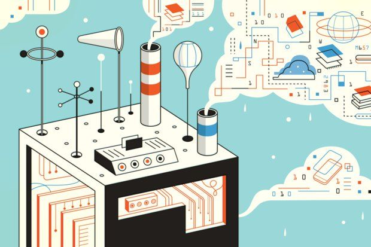

Comunicação na Informação:
Comunicação na Informação pode ser definida como um conjunto de recursos tecnológicos, utilizados de forma integrada, com um objetivo comum.
O poder da Informação:
A sociedade em geral e o ambiente corporativo ao longo dos anos vem passando por grandes transformações culturais e tecnológicas.
Inovação Tecnologia:
São consideradas inovações tecnológicas aqueles aparelhos ou serviços capazes de interferir na vida e comportamento das pessoas.

Internet das Coisas:
É uma rede de objetos físicos, veículos, prédios e outros que possuem tecnologia embarcada, sensores e conexão com a rede e é capaz de coletar e transmitir dados.